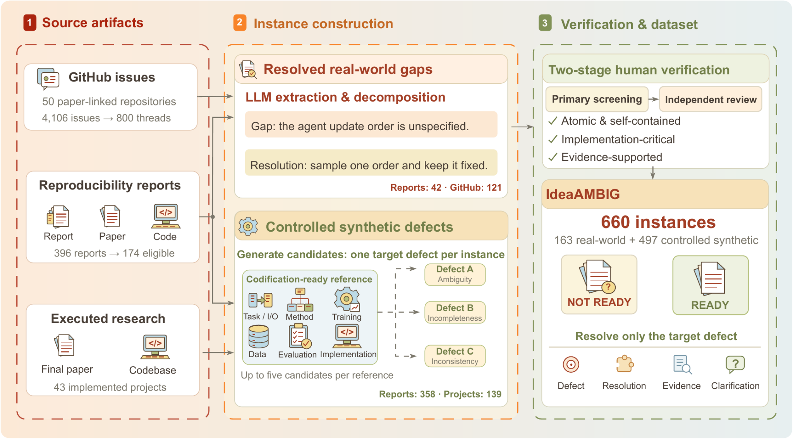

Assess readiness
Does the specification provide enough information for faithful implementation?
SpecificationREADY / NOT READY + rationale
Macro-F1
Research ideas. Implementation-critical details.
1 Yale University2 University of Maryland, College Park3 TCS Research
The question before the code
A research idea can be novel and scientifically plausible while still leaving the core method underdetermined.
Codification readiness asks whether a competent implementer or coding agent can build a faithful initial implementation without inventing unsupported assumptions about the core method.
IdeaAMBIG separates three capabilities: assessing readiness, discovering the unresolved implementation decision, and formulating a clarification action once that decision is known.
Real-world gaps are reconstructed from resolved issues and reproducibility reports. Synthetic instances alter a single method-defining detail in a codification-ready reference.

121 GitHub issues · 42 reproducibility reports
358 reproducibility reports · 139 executed research trajectories
The benchmark
Every main-benchmark instance isolates one atomic defect and pairs an underspecified input with a resolved reference.
Does the specification provide enough information for faithful implementation?
Macro-F1
Which method-defining decision is unresolved, and what kind of defect is it?
Macro Defect Recovery Rate
Given the annotated defect, what question or evidence would resolve it?
Macro Clarification Action Success Rate
A shared vocabulary
Taxonomy labels describe the defect; the target description identifies the specific unresolved decision.
Ambiguous Definition
Ambiguous Procedure
Missing Method Procedure
Missing Model Structure
Missing Data Specification
Missing Configuration Protocol
Missing Evaluation Specification
Conflicting Objective
Conflicting Model Design
Conflicting Formal Definition
Loading distributions…
Hover or focus a bar to inspect it. Click to pin a category; Escape clears it.
Inside the dataset
Six curated cases cover both subsets and all three defect types. Each highlights a concrete implementation decision and its supported resolution. The panels show gold annotations, not live model predictions.
13-model evaluation
Explore performance across readiness assessment, defect localization, and clarification action generation on both instance sets.
13-model evaluation
Loading model results…
Swipe horizontally to compare both rankings.
Hover or focus a model to trace its ranking.
Ranks are among the selected models; ties in reported scores share a rank. Connections show model rankings across different instance sets, not paired-instance changes. All scores are percentages.
| Model | Δ Real − Synth.Macro-F1 · pp |
|---|
Evidence behind the takeaways
Four findings from the paper. Compare the instance sets in the first two charts, then examine what changes when the blocker and its resolution are supplied.
Finding 1 · Readiness assessment
GPT-5.6-Sol reaches 67.5 Macro-F1 on real-world specifications, compared with 86.4 on controlled synthetic instances.
On the real-world subset, it accepts 31% of underspecified inputs and rejects 34% of ready ones. A readiness label alone is not a dependable implementation gate.
Paper: RQ1 and Table 15. Task 1 evaluates 100 READY and 100 NOT READY specifications per subset.
GPT-5.6-Sol · Real-world
Macro-F1: higher is better. UnsafePass and OverFlag: lower is better. All values are percentages.
Finding 2 · Defect localization
On real-world instances, GPT-5.6-Sol reaches 60.1% Level-1 accuracy, but identifies the annotated blocker in only 16.0% of instances. Macro DRR, which also requires correct taxonomy labels, is 9.6%.
Models can name a plausible defect category while missing the unresolved decision that determines the implementation.
Paper: RQ2 and Table 16. Real-world: 163 instances; synthetic: 200. Metrics have different success criteria and are not successive filtering stages.
GPT-5.6-Sol · Real-world
All values are percentages; higher is better. Loc-Acc measures matching the annotated blocker; Macro DRR additionally requires both taxonomy labels.
Finding 3 · Blocker availability
Models are better at acting on a known blocker than discovering it from the specification alone.
In a controlled comparison with GPT-5.6-Sol on all 163 real-world instances, providing the annotated blocker raises clarification success by 67.0 percentage points.
Same model, output schema, decoding settings, and evaluation protocol. Both bars measure Macro-CAS.
Paper: RQ3 and Table 3. The controlled comparison uses all 163 real-world instances.
Finding 4 · Downstream utility
From clarification to implementation
With gold resolutions supplied, clarification-assisted generation improves both specification readiness and executable code.
14% to 98%
50 real-world instances · blinded human evaluation30% to 90%
20 controlled instances · bounded componentsThese studies measure the utility of successful clarification under oracle conditions: the annotated defect and gold resolution are provided. They are separate from end-to-end agent performance.
Paper: oracle clarification study and controlled code-generation study.
Takeaways
A research idea needs its method-defining decisions resolved before it can be faithfully implemented.
Scientific plausibility alone does not establish readiness. IdeaAMBIG tests whether a specification resolves the decisions needed for faithful implementation.
Three complementary tasksDeveloping stronger blocker discovery is a central priority: models are substantially better at acting on an annotated gap than finding it from the specification alone.
Evidence from blocker availabilityResolving a specification gap can improve readiness and implementation fidelity. The oracle studies motivate workflows that obtain the missing information before generating code.
Utility under oracle conditionsThe results motivate research agents that identify unresolved decisions, seek supporting evidence, and ask targeted questions before committing to implementation choices.
Explore evidence-grounded examplesOpen research
The benchmark and construction and evaluation code are available on GitHub.
git clone https://github.com/Yiling-Ma/IdeaAMBIG.git
cd IdeaAMBIG
python3 - <<'PY'
import json
from pathlib import Path
path = Path("Data/real_benchmark_instance.jsonl")
instances = [json.loads(line) for line in path.read_text().splitlines() if line.strip()]
print(f"Loaded {len(instances)} real-world instances")
print(instances[0]["input"]["underspecified_spec"])
PYReference
@article{ma2026ideaambig,
title = {IdeaAMBIG: Benchmarking Implementation-Critical Gaps
in Research-Idea Specifications},
author = {Ma, Yiling and Zhao, Yilun and Wu, Sihong
and Patwardhan, Manasi and Cohan, Arman},
journal = {arXiv preprint arXiv:2609.10539},
year = {2026},
url = {https://arxiv.org/abs/2609.10539}
}